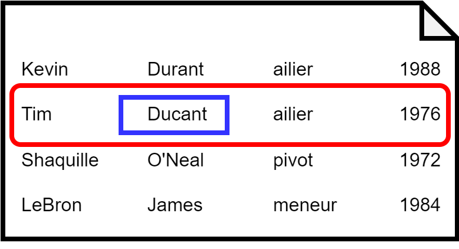
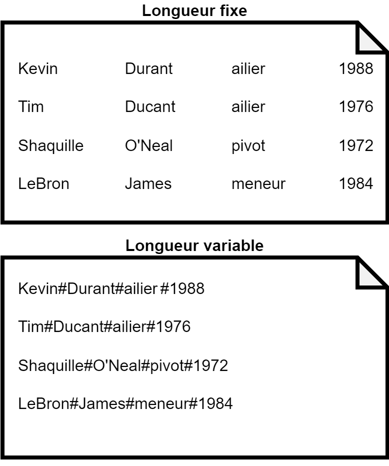
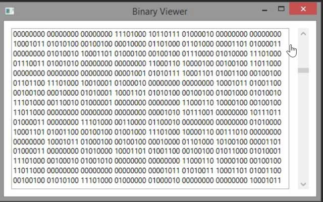

class: center, middle # Programmation procédurale : # les fichiers <img height="200px" src="img/logo.png"> --- ## On parle de quoi ? 1. <a href="UAA11-ch10.html#3">Le concept de fichier</a> 2. <a href="UAA11-ch10.html#5">Structures et fichiers</a> 3. <a href="UAA11-ch10.html#6">Deux modes de support</a> 4. <a href="UAA11-ch10.html#8">Opérations sur un fichier</a> 5. <a href="UAA11-ch10.html#15">Conseil pour un code propre</a> --- ## Le concept de fichier Un **fichier** est un ensemble de données qui concernent un même thème. → par exemple, un fichier contenant les joueurs d'un équipe de Basket Un fichier est composé d'<span style="color:red;font-weight: bold;">enregistrements</span>. → par exemple, un enregistrement correspond à un joueur d'une équipe de Basket Un enregistrement est composé de <span style="color:blue;font-weight: bold;">champs</span>. → par exemple, un champ qui correspond au nom du joueur  --- ## Le concept de fichier Un champ possède 3 caractéristiques : * un nom (ex. "Poste") * un type (ex. entier) * une longueur (fixe ou variable)  --- ## Structures et fichiers Un enregistrement en C est construit à l'aide d'une structure. Si on reprend l'exemple avec l'équipe de Basket : ```c #define TAILLE_NOM_MAX 150 #define TAILLE_PRENOM_MAX 150 #define TAILLE_POSTE_MAX 50 struct joueur{ char nom[TAILLE_NOM_MAX]; char prenom[TAILLE_PRENOM_MAX]; char poste[TAILLE_POSTE_MAX]; int dateNaissance; }; typedef struct joueur Joueur; ``` --- ## Deux modes de support ### Fichier texte ✅ Lisible et compréhensible à l'oeil nu dans un éditeur de texte ❌ Portabilité non assurée car le codage du passage à la ligne dépend de l'OS ### Fichier binaire ✅ Portabilité assurée (tous les ordinateur du monde savent lire le binaire) ❌ Illisible à l'oeil nu  --- ## Opérations sur un fichier ### L'ouverture L'**ouverture** est l'opération indispensable avant tout travail sur le fichier. Elle permet au programme d'avoir accès au fichier en stockant les données dans le buffer. L'ouverture se fait avec la fonction `fopen_s` : ```c FILE *pFichier; fopen_s(&pFichier, "C:\Lakers.dat","rb"); if(pFichier == NULL) printf("Fichier introuvable !\n"); ``` → `pFichier` est un **pointeur** : il s'agit d'une variable qui contient l'adresse d'une autre variable → ici, `pFichier` est un pointeur de type `FILE` : il pointe donc vers une zone dans un fichier --- ## Opérations sur un fichier ### L'ouverture | Accès fichier<br>texte/binaire | Type d'ouverture | Fichier existant | Fichier inexistant | |---------------------------------- |------------------ |------------------------------------ |-------------------------- | | w / wb | Ecriture | Contenu écrasé | Création | | r / rb | Lecture | Positionnement au début par défaut | Pointeur = NULL (erreur) | | a / ab | Ecriture | Positionnement à la fin par défaut | Création | | w+ / wb+ | Lecture/Ecriture | Contenu écrasé | Création | | r+ / rb+ | Lecture/Ecriture | Positionnement au début par défaut | Pointeur = NULL (erreur) | | a+ /ab+ | Lecture/Ecriture | Positionnement à la fin par défaut | Création | --- ## Opérations sur un fichier ### La lecture La **lecture** permet d'obtenir des informations se trouvant dans le fichier. * soit l'enregistrement complet * soit certains champs de certains enregistrements * soit plusieurs enregistrement --- ## Opérations sur un fichier ### La lecture La lecture se fait avec la fonction `fread_s` : ```c FILE *pFichier; Joueur joueur; fopen_s(&pFichier, "C:\Lakers.dat","rb"); if (pFichier == NULL) { printf("Fichier introuvable !\n"); } else { fread_s(&joueur, sizeof(joueur), sizeof(joueur), 1, pFichier); // joueur contient les données du premier joueur dans le fichier // pFichier indique la position qui suit le dernier octet lu // (dans ce cas-ci, le joueur suivant) } ``` --- ## Opérations sur un fichier ### La lecture Comment savoir quand arrêter la lecture lorsqu'il n'y a plus de données à lire ? * Première solution : utiliser `feof` ```c // Toujours une lecture avant d'utiliser feof !! fread_s(&joueur, sizeof(joueur), sizeof(joueur), 1, pFichier); while(!feof(pFichier)){ fread_s(&joueur, sizeof(joueur), sizeof(joueur), 1, pFichier); } ``` * Deuxième solution : utiliser la valeur de retour de `fread_s` ```c while(fread_s(&joueur, sizeof(joueur), sizeof(joueur), 1, pFichier) != 0){ // affichage } ``` --- ## Opérations sur un fichier ### L'écriture L'**écriture** consiste à écrire des informations dans le fichier (nouveaux champs, nouveaux enregistrements). --- ## Opérations sur un fichier ### L'écriture L'écriture se fait avec la fonction `fwrite` : ```c FILE *pFichier; Joueur joueur; fopen_s(&pFichier, "C:\Lakers.dat","ab"); // pourquoi ab ? if (pFichier == NULL) { printf("Fichier introuvable !\n"); } else { strcpy_s(joueur.nom, TAILLE_NOM_MAX, "Jordan"); strcpy_s(joueur.prenom, TAILLE_PRENOM_MAX, "Michael"); strcpy_s(joueur.poste, TAILLE_POSTE_MAX, "arriere"); joueur.dateNaissance = 1963; fwrite(&joueur, sizeof(joueur), 1, pFichier); //pFichier indique la position qui suit le dernier octet écrit // (dans ce cas-ci, après le nouveau joueur ajouté) } ``` --- ## Opérations sur un fichier ### L'écriture L'écriture peut également se faire avec `fprintf` avec les fichiers texte(déconseillé). → généralement utilisé pour tester son code ```c FILE *pFichier; Joueur joueur; fopen_s(&pFichier, "C:\Lakers.dat","a"); // pourquoi ab ? if (pFichier == NULL) { printf("Fichier introuvable !\n"); } else { strcpy_s(joueur.nom, TAILLE_NOM_MAX, "Jordan"); strcpy_s(joueur.prenom, TAILLE_PRENOM_MAX, "Michael"); strcpy_s(joueur.poste, TAILLE_POSTE_MAX, "arriere"); joueur.dateNaissance = 1963; fprintf(pFichier, "%s %s %s %d", joueur.nom, joueur.prenom, joueur.poste, joueur.dateNaissance); } ``` --- ## Opérations sur un fichier ### La fermeture La fermeture coupe le lien entre le programme et le fichier. La fermeture se fait avec la fonction `fclose` : ```c FILE *pFichier; Joueur joueur; fopen_s(&pFichier, "C:\Lakers.dat","rb"); if (pFichier == NULL) { printf("Fichier introuvable !\n"); } else { // lecture(s), écriture(s),... fclose(pFichier); } ``` → <span style="color:red;font-weight: bold;">Indispensable avant la terminaison du programme !</span> --- ## Se positionner dans le fichier Parfois, il est nécessaire de déplacer manuellement la position du pointeur. ### Déplacement à partir du début du fichier : `SEEK_SET` ```c fseek(pFichier, N, SEEK_SET); ``` ### Déplacement à partir de la position courante : `SEEK_CUR` ```c fseek(pFichier, N, SEEK_CUR); ``` ### Déplacement à partir de la fin du fichier : `SEEK_END` ```c fseek(pFichier, N, SEEK_END); ``` --- ## Conseil pour un code propre ```c void main(void){ FILE *pFichier; Joueur joueur; fopen_s(&pFichier, "C:\Lakers.dat","rb"); if (pFichier == NULL) { printf("Fichier introuvable !\n"); } else { // lecture(s), écriture(s),... fclose(pFichier); fopen_s(&pFichier, "C:\Lakers.dat","ab"); // lecture(s), écriture(s),... fclose(pFichier); fopen_s(&pFichier, "C:\Lakers.dat","wb"); // lecture(s), écriture(s),... fclose(pFichier); } } } ``` → Comment améliorer ce code ? --- ## Conseil pour un code propre ```c #define CHEMIN_FICHIER "C:\Lakers.dat" void main(void){ FILE *pFichier; Joueur joueur; fopen_s(&pFichier, CHEMIN_FICHIER,"rb"); if (pFichier == NULL) { printf("Fichier introuvable !\n"); } else { // lecture(s), écriture(s),... fclose(pFichier); fopen_s(&pFichier, CHEMIN_FICHIER,"ab"); // lecture(s), écriture(s),... fclose(pFichier); fopen_s(&pFichier, CHEMIN_FICHIER,"wb"); // lecture(s), écriture(s),... fclose(pFichier); } } } ```